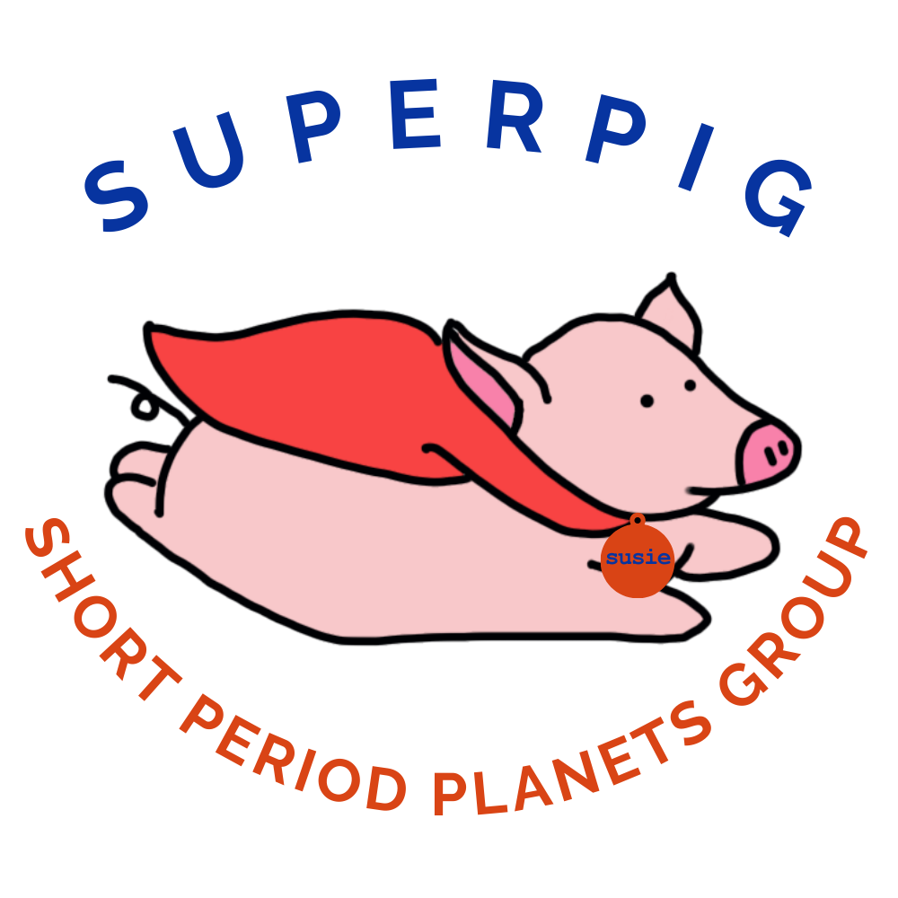
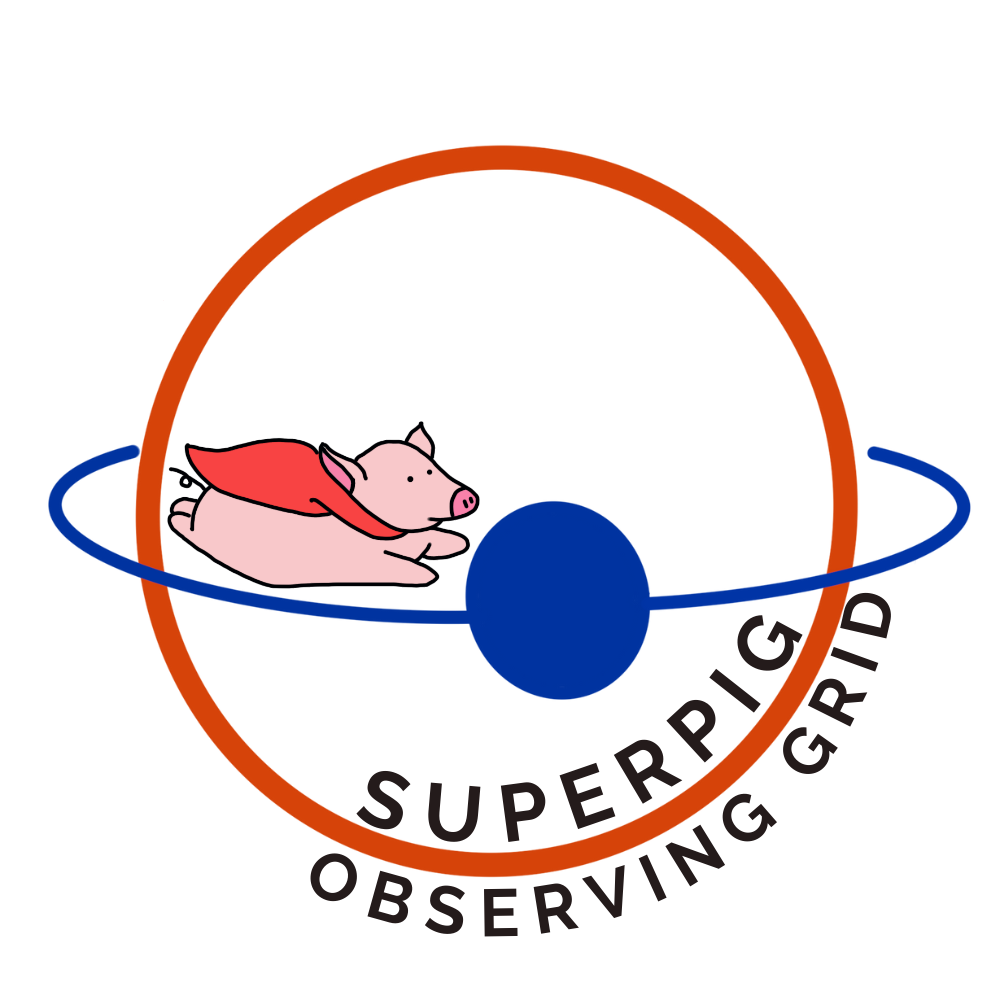

Welcome to Susie’s documentation!#
Susie is a package built for astronomers to estimate rates of orbital decay due to tidal interactions in their extrasolar system.
<<<<<<< HEAD  =======
Here I am testing to see if the absolute path method will work
Here I am testing if moving the image into the docs folder will work
Here I have the original path
>>>>>>> b8d942c6a20d9772e9dd39d0a2a25b3513fa5156About#
Susie works by fitting your transit mid-times (or occultation mid-times if given) to both a linear and quadratic model, then calculating a modified \(\chi ^2\) metric called \(\rm BIC\) for both models to determine which model best represents your data. Whichever model has a larger value of \(BIC\) will be the model that best represents your data. If a linear model provides a better fit, your system is assumed to not be exhibiting tidal decay. If a quadratic model provides a better fit, your system is assumed to be exhibiting tidal decay. Metrics are simplified for you by calculating a \(\Delta BIC\) value (the linear \(BIC\) minus the quadratic \(BIC\)). The higher your \(\Delta BIC\) value, the more likely your system is exhbiting tidal decay. More data on these metrics and how they are calculated can be found in our team’s paper here.
You can choose to fit your data to a specified model, or we can do the work for you, fitting both models with your data and returning a \(\Delta BIC\) value for you to further assess. Visualizations are given for you to further examine your results with your resturned model data. Just input your data into the transit_times.py object, then insert your created object into the ephemeris.py object to proceed with your choice of modeling and visualizations. See the documentation and example scripts below for more.
Future work includes implementation of Astroplan to provide future observing schedules so you can make sure to catch every transit available from your observing point. We also plan to improve our model fits with the Emcee package, as well as include functionality to detect precession that may masquerade as tidal decay in your system.
Note
This project is under active development.
Quickstart#
Install the latest released version from the Python Package Index PyPi:
pip install susieInclude at the top of your Python file or notebook:
import susieor
from susie import Ephemeris, TransitTimes
Documentation#
- User Guide
- Ephemeris module
- Transit Times module
-
<<<<<<< HEAD
OccultationTimesTimingData
=======
>>>>>>> b8d942c6a20d9772e9dd39d0a2a25b3513fa5156
TransitTimes
- Module contents
- Frequently Asked Questions
Tutorials#
Indices and tables#
The developers were supported by a TESS Guest Investigator Cycle-5 grant (NNH21ZDA001N), and an Exoplanets Research grant (NNH21ZDA001N).